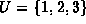
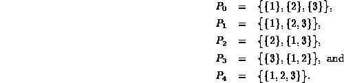
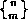
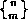
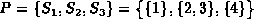
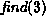
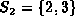
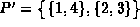
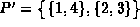

Data Structures and Algorithms
with Object-Oriented Design Patterns in C++
Data Structures and Algorithms
with Object-Oriented Design Patterns in C++
Consider the finite universal set  .
A partition of U
is a finite set of sets
.
A partition of U
is a finite set of sets  with the following properties:
with the following properties:
For example, consider the universe . There are exactly five partitions of U:

In general, given a universe U of size n>0,
i.e., |U|=n,
there are  partitions of U,
where  is the so-called
Stirling number of the second kind
which denotes the number of ways to partition a set of n elements
into m nonempty disjoint subsets.
partitions of U,
where  is the so-called
Stirling number of the second kind
which denotes the number of ways to partition a set of n elements
into m nonempty disjoint subsets.
Applications which use partitions typically start with an initial partition and refine that partition either by joining or by splitting elements of the partition according to some application-specific criterion. The result of such a computation is the partition obtained when no more elements can be split or joined.
In this chapter we shall consider only applications that begin
with the initial partition of U
in which each item in U is in a separate element of the partition.
Thus, the initial partition consists of |U| sets,
each of size one (like  above).
Furthermore, we restrict the applications in that we only allow
elements of a partition to be joined--we do not allow elements to split.
above).
Furthermore, we restrict the applications in that we only allow
elements of a partition to be joined--we do not allow elements to split.
The two operations to be performed on partitions are:
For example, consider the partition
.
The result of the operation  is the set 
because 3 is a member of  .
Furthermore, when we join sets
.
Furthermore, when we join sets  and
and  ,
we get the partition .
,
we get the partition .
 Copyright © 1997 by Bruno R. Preiss, P.Eng. All rights reserved.
Copyright © 1997 by Bruno R. Preiss, P.Eng. All rights reserved.